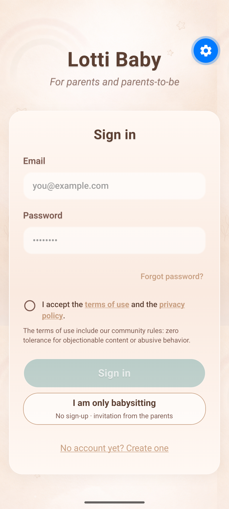
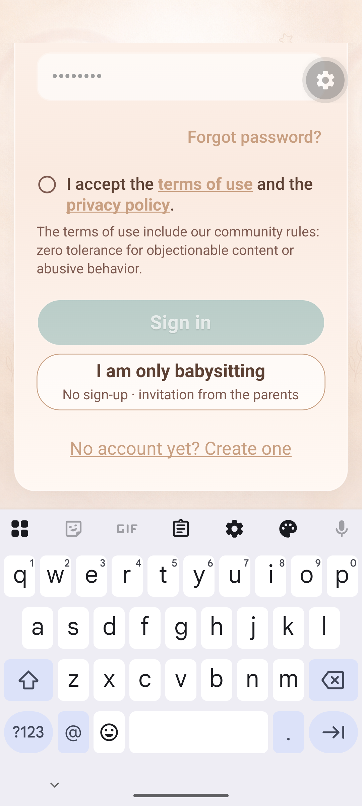
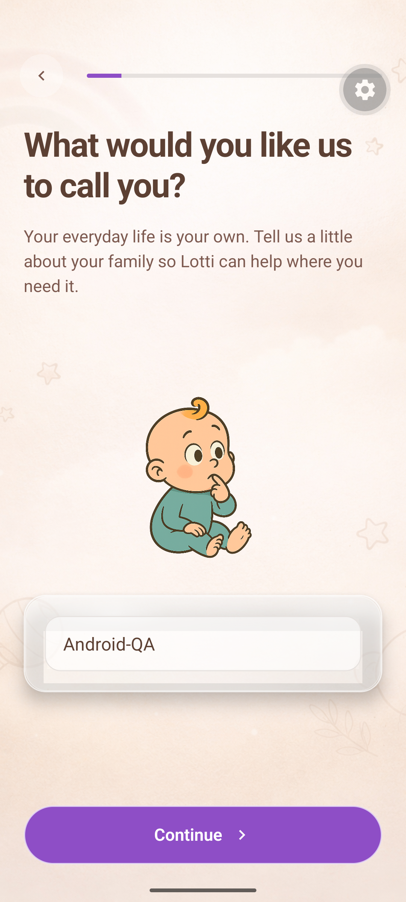
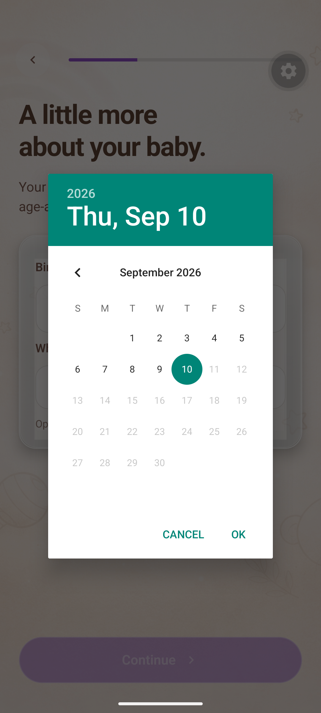
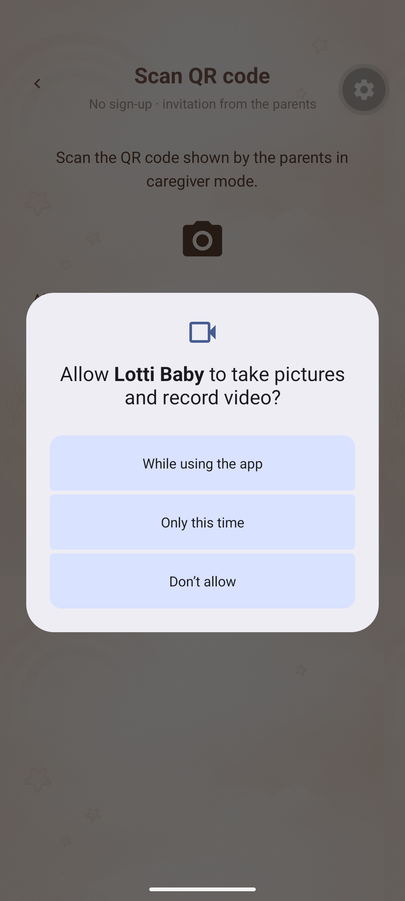
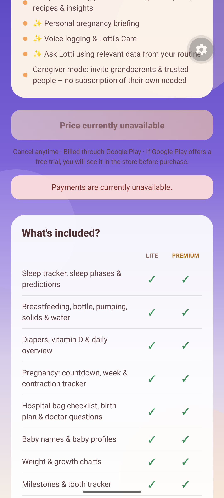
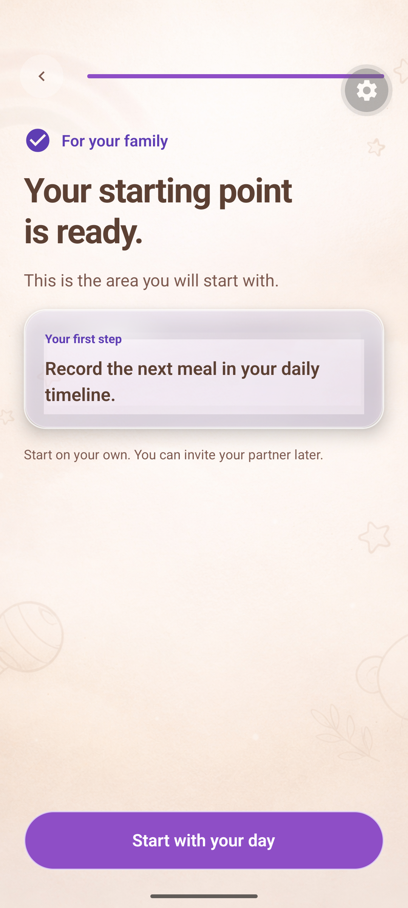
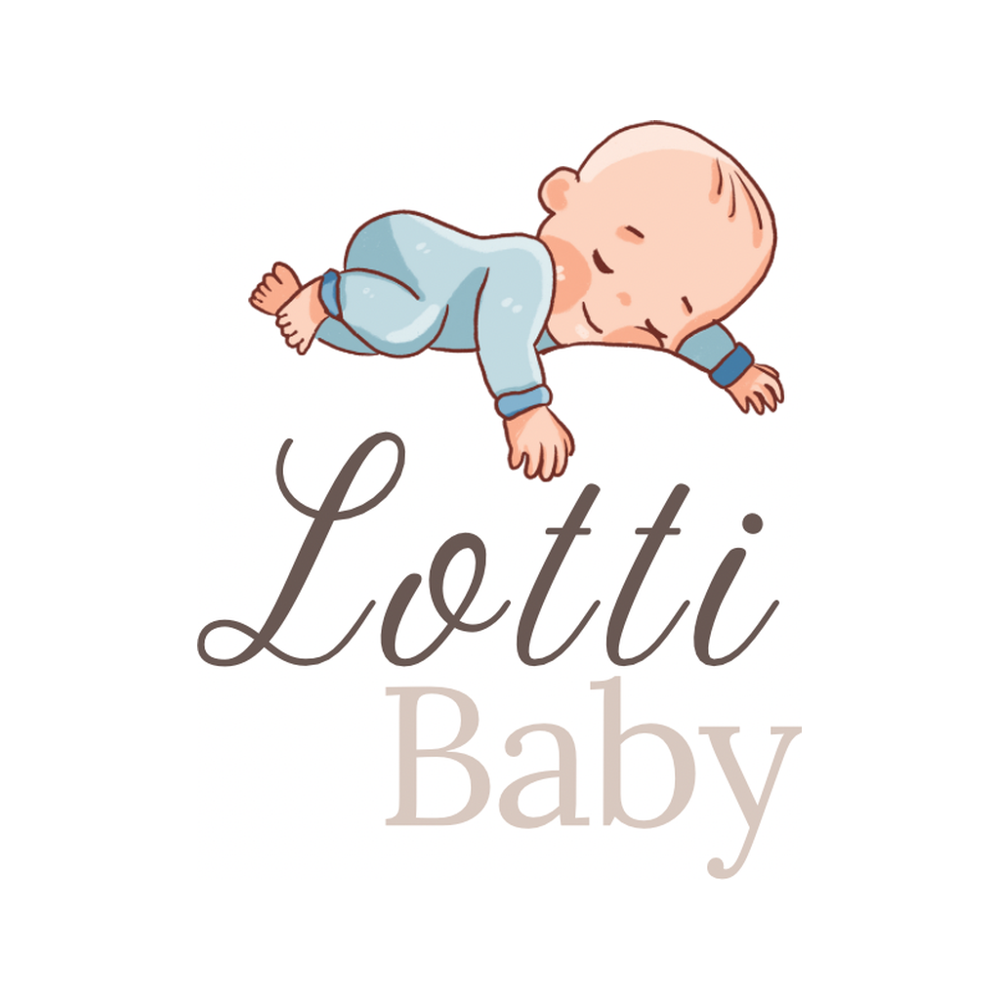

Schritt 6 · 10.09.2026 · Entwurf
Lotti Baby
Store-Material zur Prüfung
Aufnahmeplan, vorhandene Bildquellen und Android-QA-Nachweise. Diese Übersicht enthält keine final freigegebenen Store-Bilder.
Finale Aufnahmen folgen nach Schritt 5.
Die QA-Bilder sind englische Debugansichten mit Alpha und einem Seitenverhältnis von 1080:2400. Sie erfüllen die geplante deutsche Store-Serie nicht und dürfen nicht als finale Screenshots hochgeladen werden.
Aufnahmeplan und Exportvorgaben · Gesamtes Store-Paket
Geplante deutsche Serie
- 01Euer Tag auf einen Blicktagesuebersicht · Aufnahme offen
- 02Schlafzeiten festhaltenschlaf · Aufnahme offen
- 03Mahlzeiten im Blickmahlzeiten · Aufnahme offen
- 04Gemeinsam vorausplanenplaner · Aufnahme offen
- 05Deine Schwangerschaft begleitenschwangerschaft · Aufnahme offen
- 06Kleine Momente bewahrenmeilensteine · Aufnahme offen
- 07Betreuung gemeinsam organisierenfamilie · Aufnahme offen
- 08Fragen zu deinen Einträgenfrag-lotti · Aufnahme offen
Vorhandene QA-Nachweise
Unveränderte Kopien aus Schritt 5. Anklicken öffnet die Originalauflösung; keine erfundene App-Ansicht.

01 · Login1080 × 2400 · Englisch · Debug · nicht für Store-Upload
02 · Tastatur bei großer Schrift1080 × 2400 · Englisch · Debug · nicht für Store-Upload
03 · Onboarding: Zurück1080 × 2400 · Englisch · Debug · nicht für Store-Upload
04 · Datumsdialog1080 × 2400 · Englisch · Debug · nicht für Store-Upload
05 · Kameraberechtigung1080 × 2400 · Englisch · Debug · nicht für Store-Upload
06 · Paywall ohne verfügbare Preise1080 × 2400 · Englisch · Debug · nicht für Store-Upload
07 · Onboarding-Zusammenfassung1080 × 2400 · Englisch · Debug · nicht für Store-UploadVorhandenes Icon

Quelle: assets/images/icon.png · 1024 × 1024. Finaler Play-Export und Feature Graphic stehen noch aus.